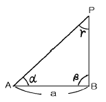
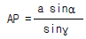
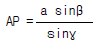
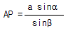
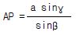
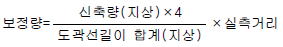
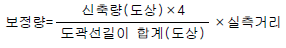
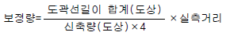
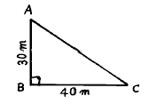

지적기능사 (2003-10-05 기출문제)
1과목: 지적일반(임의구분)
1. 다음 중 지적제도의 유형에 속하지 않는 것은?
- 행정 지적
- 세 지적
- 다목적 지적
- 법 지적
(정답률: 81%)

2. 다음중 지적의 요소에 들지 않는 것은?
- 토지
- 등록
- 1필지
- 지적공부
(정답률: 77%)
3. 종교용지내에 있는 사적지 부지의 지목은?
- 사적지
- 종교용지
- 대
- 잡종지
(정답률: 51%)
4. 지적의 공부를 무제한으로 열람하여 공개하거나 등본을 교부하는 지적법의 개념은?
- 지적등록주의
- 지적공개주의
- 지적국정주의
- 지적형식주의
(정답률: 95%)
5. '산 23-2' 지번이 부여된 필지가 등록된 지적공부는?
- 임야대장
- 토지대장
- 경계점좌표등록부
- 지적도
(정답률: 89%)
6. 지적도나 임야도에 중복하여 등록된 동일한 경계에 대하여는 어떻게 하는가?
- 임야도상의 등록경계를 택한다.
- 지적도상의 등록경계를 택한다.
- 지적도나 임야도 경계중 임의로 경계를 택한다.
- 지적도나 임야도상 경계 어느 것도 인정하지 않는다.
(정답률: 55%)
7. 지적공부의 등록사항인 지번, 지목, 경계, 좌표 및 면적은 누가 결정 하는가?
- 개인
- 소관청
- 법인
- 소유자
(정답률: 92%)
8. 지목을 지적도에 표시할때 부호 표기 방법이 맞는 것은?
- 유지 - 지
- 공장용지 - 공
- 유원지 - 유
- 공원 - 공
(정답률: 65%)
9. 지번에 대한 설명으로 틀린 것은?
- 토지의 특정성을 보장하는 수적 요소이다.
- 토지의 식별에 쓰인다.
- 지번설정 단위지역은 시, 군이다.
- 토지의 명칭적 역할을 한다.
(정답률: 66%)
10. 다음 중 우리나라의 지적에서 채택하고 있지 않는 것은?
- 법지적
- 토렌스 제도
- 세지적
- 물적 편성주의
(정답률: 71%)
11. 다음중 중부원점은 어느것인가?
- 북위 38° 선과 동경 135° 선의 교점
- 북위 38° 선과 동경 130° 선의 교점
- 북위 38° 선과 동경 127° 선의 교점
- 북위 38° 선과 동경 125° 선의 교점
(정답률: 74%)
12. 측량준비도를 작성하려고 한다. 다음 중 기재하지 않아도 되는 것은?
- 지적측량기준점 및 기타 측량의 기점이 될 만한 기지점
- 도곽선과 그 도곽선 수치
- 지적도 도곽선이 0.5mm 이하의 신축이 있을 때의 신축량 및 보정계수
- 측량대상 토지의 경계선, 지번, 지목
(정답률: 59%)
13. 지적삼각보조측량에서 삼각형의 내각의 범위를 어느 정도로 하도록 되어 있는가?
- 20° ∼ 140°
- 30° ∼ 120°
- 40° ∼ 100°
- 50° ∼ 80°
(정답률: 84%)
14. 지적삼각보조측량에서 교점다각망을 구성할 경우 교점을 포함한 1도선의 점의수는?
- 5점 이하
- 10점 이하
- 20점 이하
- 40점 이하
(정답률: 28%)
15. 도근측량에서 도선을 계산한 결과 종선차 12㎝, 횡선차 16㎝이었다. 연결교차는?
- 17㎝
- 20㎝
- 25㎝
- 32㎝
(정답률: 67%)
16. 축척 1/1200 지역에서 원면적 1000m2 의 토지를 분할할 때 신구면적 오차의 허용범위로 맞는 것은?
- 20m2 이하
- 25m2 이하
- 30m2 이하
- 35m2 이하
(정답률: 61%)
17. 임야도 시행지역의 세부측량을 측판측량으로 하는 경우 거리 측정단위는 얼마까지 할 수 있는가?
- 5㎝
- 10㎝
- 25㎝
- 50㎝
(정답률: 26%)
18. 다음 중 거리를 측정할 때 측정 횟수에 비례하여 오차가 커지는 것은?
- 정오차
- 우연오차
- 착오
- 허용오차
(정답률: 60%)
19. 측판측량방법에 의한 세부측량을 방사법으로 하는 경우 1방향선의 도상길이는 얼마 이하로 하는가?
- 1cm
- 5cm
- 10cm
- 20cm
(정답률: 49%)
20. 방위각법에 의한 지적도근측량에서 각도의 측정 단위는 어느 것인가?
- 1″
- 10″
- 1′
- 1°
(정답률: 50%)
2과목: 지적측량(임의구분)
21. 다음 그림의 AP간 거리를 측정하는 공식으로 옳은 것은?





(정답률: 40%)
22. 다음 중 지적측량의 방법으로 볼 수 없는 것은?
- 측판측량 및 경위의측량
- 광파기측량
- 지형측량
- 사진측량
(정답률: 47%)
23. 지적삼각측량의 수평각 관측 방법은?
- 배각법
- 방향관측법
- 단측법
- 편각법
(정답률: 58%)
24. 축척 1/1200 지역을 측판측량방법에 의해 세부측량을 할때 도상에 영향을 미치지 않는 지상거리의 허용한계는 얼마인가?
- 6㎜
- 10㎜
- 120㎜
- 240㎜
(정답률: 60%)
25. 세부측량시 측판측량방법에 의하여 거리를 측정하는 경우 측정거리의 보정량 산출식은?



(정답률: 22%)
26. 토지에 대한 모든 신청은 원칙적으로 토지소유자가 하여야 하나 토지소유자를 대신하여 사업시행자가 신청할 수있는 토지의 지목이 아닌 것은?
- 학교용지
- 철도용지
- 수도용지
- 공장용지
(정답률: 37%)
27. 토지이동 사항이 아닌 것은?
- 분할
- 주소변경
- 지목변경
- 등록전환
(정답률: 32%)
28. 다음 중 지적법에서 정의된 지적공부에 속하는 것은?
- 공유지연명부
- 지적약도
- 지적도부본
- 소유대장
(정답률: 72%)
29. 5층 건물의 한층을 빌려서 예배를 위한 장소로 사용하고 있다면 이 건물부지의 지목은?(오류 신고가 접수된 문제입니다. 반드시 정답과 해설을 확인하시기 바랍니다.)
- 종교용지
- 사적지
- 대
- 잡종지
(정답률: 33%)
30. 1910년 토지조사사업 당시 소유자와 경계를 심사하여 확정한 처분을 무엇이라 하는가?
- 토지조사
- 사정
- 재결
- 부본
(정답률: 59%)
31. 지적법에 의한 신청을 허위로 한 자에 대한 벌칙은?(관련 규정 개정전 문제로 여기서는 기존 정답인 1번을 누르면 정답 처리됩니다. 자세한 내용은 해설을 참고하세요.)
- 1년 이하의 징역 또는 500만원 이하의 벌금
- 2년 이하의 징역 또는 500만원 이하의 벌금
- 2년 이하의 징역 또는 1천만원 이하의 벌금
- 3년 이하의 징역 또는 1천만원 이하의 벌금
(정답률: 55%)
32. 지적도의 축척표시로 적합하지 않은 것은?
- 1/2400
- 1/500
- 1/1500
- 1/1200
(정답률: 73%)
33. 지적공부에 등록된 1필지의 일부가 형질변경 등으로 용도가 다르게 된 때에는 다음 중 어떠한 신청을 하여야 하는 가?
- 신규등록
- 축척변경
- 토지분할
- 등록전환
(정답률: 45%)
34. 토지대장을 당해 시,군,구의 청사밖으로 반출하는 절차중 옳은 것은?
- 읍,면장의 승인을 얻는다.
- 소관청의 승인을 얻는다.
- 시,도지사의 승인을 얻는다.
- 행정자치부장관의 승인을 얻는다.
(정답률: 35%)
35. 중앙지적위원회는 어느 기관에 두는가?
- 행정자치부
- 대한지적공사
- 국립지리원
- 시· 도
(정답률: 21%)
36. 다음 중 경계선을 새로이 설정하지 않아도 되는 것은?
- 신규등록
- 토지합병
- 등록전환
- 토지분할
(정답률: 53%)
37. 경계점좌표등록부 상의 등재사항으로 옳은 것은?
- 토지소재, 지번, 좌표
- 토지소재, 지번, 지목
- 토지소재, 지번, 면적
- 토지소재, 지번, 토지등급
(정답률: 74%)
38. 1필지의 토지소유자가 2인 이상인 때 비치하는 장부는?
- 일람도
- 지번색인표
- 경계점좌표등록부
- 공유지연명부
(정답률: 81%)
39. 1/600 지적도에 이동지가 정리된 경계선의 폭이 지표상에서는 계산상 얼마나 되는가?
- 3cm
- 6cm
- 9cm
- 12cm
(정답률: 62%)
40. 지적공부를 복구할 때 소유권의 복구 방법은?
- 법원의 확정판결서
- 인우(隣友)보증서
- 소관청 확인서
- 소유권 조사서
(정답률: 61%)
3과목: 지적공부정리(임의구분)
41. 지적공부에 등록된 토지중 소유권의 득실변경이 있을 경우 어느 것에 의하여 지적공부를 정리하게 되는가?
- 토지대장 등본
- 지적도 등본
- 등기필증 또는 등기부 등본
- 소유자 변경 신고서
(정답률: 44%)
42. 지적도와 임야도의 도곽선 밖에 제도하여야 하는 사항이 아닌 것은?
- 색인도
- 제명
- 도곽선수치
- 행정구역경계
(정답률: 29%)
43. 지적도와 임야도에 등록하는 동· 리계는 어떻게 제도하여야 하는가?
- 실선 3mm와 허선 1mm로 연결하여 제도
- 실선 3mm와 허선 2mm로 연결하여 제도
- 실선 1mm와 허선 3mm로 연결하여 제도
- 실선 2mm와 허선 3mm로 연결하여 제도
(정답률: 54%)
44. 소관청이 지번변경을 하고자 하는 경우 누구의 승인을 받아야 하는가?
- 시. 도지사
- 행정자치부장관
- 시장, 군수, 구청장
- 대통령
(정답률: 50%)
45. 도면 복구에 관한 제자료에 속하지 않는 것은?
- 측량결과도
- 지적공부의 등본
- 지형도
- 등록내용을 증명하는 서류
(정답률: 38%)
46. 도곽선을 측정하였더니 좌측 종선은 399.7m, 우측 종선은 399.9m, 상측횡선은 499.6m, 하측횡선은 499.8m, 이었다면 이 때 도곽선 보정계수는?
- 0.9989
- 1.0000
- 1.0011
- 1.0014
(정답률: 34%)
47. 일람도의 제도에서 일람도의 축척은 당해 도면 축척의 몇 분의 1로하는 것을 원칙으로 하는가?
- 1/5
- 1/10
- 1/20
- 1/40
(정답률: 80%)
48. 지적측량 기준점의 제도에서 지적삼각점은?
- ⊙
- ◎
- θ
(정답률: 30%)
49. 경위의측량방법으로 세부측량을 할 경우 측량결과도에 기재 할 사항으로 틀린것은?
- 지상에서 측정한 거리 및 방위각
- 측량 대상 토지의 경계점간 실측거리
- 지적도의 도면번호
- 도곽선의 신축량과 보정계수
(정답률: 70%)
50. 지적제도에서 지적도, 임야도의 도면에 기재할 내용으로 옳지 못한 것은?
- 토지의 소재
- 지번
- 지목
- 소유자
(정답률: 55%)
51. 다음 그림에서 AC의 길이를 구하라.

- 35m
- 45m
- 50m
- 60m
(정답률: 56%)
52. 전자면적측정기로 면적 측정시 도상에서 몇회 측정하여 결정하는가?
- 1회
- 2회
- 3회
- 4회
(정답률: 78%)
53. 좌표면적 계산법에 의한 면적측정시 산출면적은 어디까지 계산하는가?
- 1/10 m2 까지
- 1/100 m2 까지
- 1/500 m2 까지
- 1/1000 m2 까지
(정답률: 57%)
54. 토지 이동측량시 면적을 측정하지 않아도 되는 것은?
- 신규등록
- 합병
- 등록전환
- 분할
(정답률: 73%)
55. 지적측량에 사용하는 좌표의 원점이 아닌 것은?
- 동부원점
- 중부원점
- 남부원점
- 서부원점
(정답률: 71%)
56. 도곽선의 길이를 측정하여 +7mm, +7mm, +6mm, -4mm의 신축된 값을 얻었다. 이 도곽의 신축량은 어느 것인가?
- +4mm
- +5mm
- +6mm
- +7mm
(정답률: 62%)
57. 토지의 이동이 발생할 경우 도면을 제도하는 방법으로 틀린 것은?
- 경계를 말소하는 경우에는 짧은 교차선을 약 3mm 간격으로 제도한다.
- 말소된 경계를 다시 등록하는 경우에는 말소표시의 교차선 중심점을 기준으로 직경 2‾3mm의 붉은색 원으로 제도한다.
- 지목을 변경하는 경우에는 지목만 말소하고 그 윗부분에 새로이 설정된 지목을 제도한다.
- 등록사항정정으로 도면에 경계, 지번 및 지목을 새로이 등록하는 경우에는 이미 비치된 도면에 제도한다.
(정답률: 25%)
58. 일람도의 제도방법에 대한 설명으로 틀린 것은?
- 도면번호는 3mm의 크기로 한다.
- 인접 동· 리 명칭 및 기타 행정구역 명칭은 5mm의 크기로 한다.
- 지방도로 이상은 검은색 0.2mm 폭의 2선으로, 기타 도로는 0.1mm 폭의 선으로 제도한다.
- 철도용지는 붉은색 0.2mm 폭의 2선으로 제도한다.
(정답률: 50%)
59. 행정구역선 중 실선 3mm와 허선 2mm로 연결하고, 허선에 0.3mm의 점1개를 제도하는 것은?
- 시· 도계
- 시· 군계
- 읍· 면· 구계
- 동· 리계
(정답률: 22%)
60. 지적제도에서 사용되는 선의 색상 중 붉은 색을 사용하지 않는 것은?
- 도곽선
- 도곽선 수치
- 행정구역 경계선
- 말소선
(정답률: 45%)